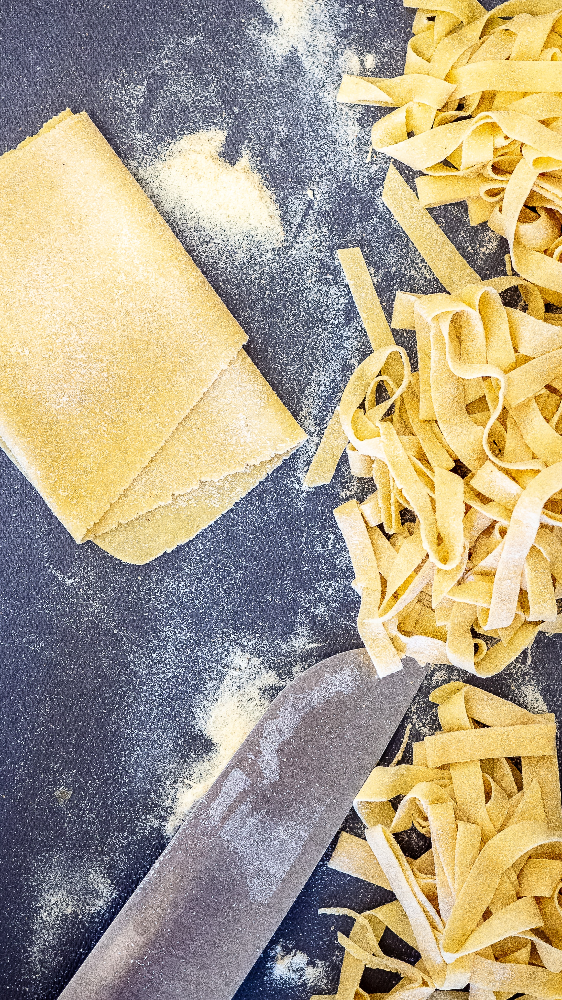

Pasta
Pasta (US: /ˈpɑːstə/, UK: /ˈpæstə/; Italian pronunciation: [ˈpasta]) is a type of food typically made from an unleavened dough of wheat flour mixed with water or eggs, and formed into sheets or other shapes, then cooked by boiling or baking. Rice flour, or legumes such as beans or lentils, are sometimes used in place of wheat flour to yield a different taste and texture, or as a gluten-free alternative. Pasta is a staple food of Italian cuisine.


Etymology
First attested in English in 1873, the word pasta comes from Italian pasta, in turn from Latin pasta, latinisation of the Greek παστά, pasta, 'barley porridge'.
Ingredients
Since at least the time of Cato's De Agri Cultura, basic pasta dough has been made mostly of wheat flour or semolina,[4] with durum wheat used predominantly in the South of Italy and soft wheat in the North. Regionally other grains have been used, including those from barley, buckwheat, rye, rice, and maize, as well as chestnut and chickpea flours.
To address the needs of people affected by gluten-related disorders (such as coeliac disease, non-celiac gluten sensitivity and wheat allergy sufferers),[31] some recipes use rice or maize for making pasta. Grain flours may also be supplemented with cooked potatoes. [32][33]
Other additions to the basic flour-liquid mixture may include vegetable purees such as spinach or tomato, mushrooms, cheeses, herbs, spices and other seasonings. While pastas are, most typically, made from unleavened doughs, the use of yeast-raised doughs are also known for at least nine different pasta forms.[4]
Additives in dried, commercially sold pasta include vitamins and minerals that are lost from the durum wheat endosperm during milling. They are added back to the semolina flour once it is ground, creating enriched flour. Micronutrients added may include niacin (vitamin B3), riboflavin (vitamin B2), folate, thiamine (vitamin B1), and ferrous iron.[34]